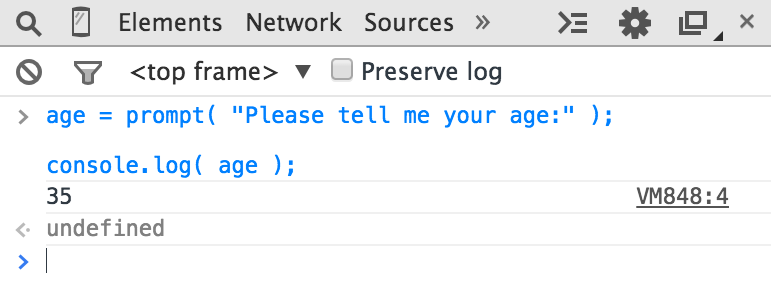

1. You Don't Know JS: Up & Going
2. Chapter 1: Into Programming
Welcome to the You Don't Know JS (YDKJS) series.
Up & Going is an introduction to several basic concepts of programming -- of course we lean toward JavaScript (often abbreviated JS) specifically -- and how to approach and understand the rest of the titles in this series. Especially if you're just getting into programming and/or JavaScript, this book will briefly explore what you need to get up and going.
This book starts off explaining the basic principles of programming at a very high level. It's mostly intended if you are starting YDKJS with little to no prior programming experience, and are looking to these books to help get you started along a path to understanding programming through the lens of JavaScript.
Chapter 1 should be approached as a quick overview of the things you'll want to learn more about and practice to get into programming. There are also many other fantastic programming introduction resources that can help you dig into these topics further, and I encourage you to learn from them in addition to this chapter.
Once you feel comfortable with general programming basics, Chapter 2 will help guide you to a familiarity with JavaScript's flavor of programming. Chapter 2 introduces what JavaScript is about, but again, it's not a comprehensive guide -- that's what the rest of the YDKJS books are for!
If you're already fairly comfortable with JavaScript, first check out Chapter 3 as a brief glimpse of what to expect from YDKJS, then jump right in!
2.1. Code
Let's start from the beginning.
A program, often referred to as source code or just code, is a set of special instructions to tell the computer what tasks to perform. Usually code is saved in a text file, although with JavaScript you can also type code directly into a developer console in a browser, which we'll cover shortly.
The rules for valid format and combinations of instructions is called a computer language, sometimes referred to as its syntax, much the same as English tells you how to spell words and how to create valid sentences using words and punctuation.
2.1.1. Statements
In a computer language, a group of words, numbers, and operators that performs a specific task is a statement. In JavaScript, a statement might look as follows:
a = b * 2;
The characters a and b are called variables (see "Variables"), which are like simple boxes you can store any of your stuff in. In programs, variables hold values (like the number 42) to be used by the program. Think of them as symbolic placeholders for the values themselves.
By contrast, the 2 is just a value itself, called a literal value, because it stands alone without being stored in a variable.
The = and * characters are operators (see "Operators") -- they perform actions with the values and variables such as assignment and mathematic multiplication.
Most statements in JavaScript conclude with a semicolon (;) at the end.
The statement a = b * 2; tells the computer, roughly, to get the current value stored in the variable b, multiply that value by 2, then store the result back into another variable we call a.
Programs are just collections of many such statements, which together describe all the steps that it takes to perform your program's purpose.
2.1.2. Expressions
Statements are made up of one or more expressions. An expression is any reference to a variable or value, or a set of variable(s) and value(s) combined with operators.
For example:
a = b * 2;
This statement has four expressions in it:
2is a literal value expressionbis a variable expression, which means to retrieve its current valueb * 2is an arithmetic expression, which means to do the multiplicationa = b * 2is an assignment expression, which means to assign the result of theb * 2expression to the variablea(more on assignments later)
A general expression that stands alone is also called an expression statement, such as the following:
b * 2;
This flavor of expression statement is not very common or useful, as generally it wouldn't have any effect on the running of the program -- it would retrieve the value of b and multiply it by 2, but then wouldn't do anything with that result.
A more common expression statement is a call expression statement (see "Functions"), as the entire statement is the function call expression itself:
alert( a );
2.1.3. Executing a Program
How do those collections of programming statements tell the computer what to do? The program needs to be executed, also referred to as running the program.
Statements like a = b * 2 are helpful for developers when reading and writing, but are not actually in a form the computer can directly understand. So a special utility on the computer (either an interpreter or a compiler) is used to translate the code you write into commands a computer can understand.
For some computer languages, this translation of commands is typically done from top to bottom, line by line, every time the program is run, which is usually called interpreting the code.
For other languages, the translation is done ahead of time, called compiling the code, so when the program runs later, what's running is actually the already compiled computer instructions ready to go.
It's typically asserted that JavaScript is interpreted, because your JavaScript source code is processed each time it's run. But that's not entirely accurate. The JavaScript engine actually compiles the program on the fly and then immediately runs the compiled code.
Note: For more information on JavaScript compiling, see the first two chapters of the Scope & Closures title of this series.
2.2. Try It Yourself
This chapter is going to introduce each programming concept with simple snippets of code, all written in JavaScript (obviously!).
It cannot be emphasized enough: while you go through this chapter -- and you may need to spend the time to go over it several times -- you should practice each of these concepts by typing the code yourself. The easiest way to do that is to open up the developer tools console in your nearest browser (Firefox, Chrome, IE, etc.).
Tip: Typically, you can launch the developer console with a keyboard shortcut or from a menu item. For more detailed information about launching and using the console in your favorite browser, see "Mastering The Developer Tools Console" (http://blog.teamtreehouse.com/mastering-developer-tools-console). To type multiple lines into the console at once, use <shift> + <enter> to move to the next new line. Once you hit <enter> by itself, the console will run everything you've just typed.
Let's get familiar with the process of running code in the console. First, I suggest opening up an empty tab in your browser. I prefer to do this by typing about:blank into the address bar. Then, make sure your developer console is open, as we just mentioned.
Now, type this code and see how it runs:
a = 21;
b = a * 2;
console.log( b );
Typing the preceding code into the console in Chrome should produce something like the following:

Go on, try it. The best way to learn programming is to start coding!
2.2.1. Output
In the previous code snippet, we used console.log(..). Briefly, let's look at what that line of code is all about.
You may have guessed, but that's exactly how we print text (aka output to the user) in the developer console. There are two characteristics of that statement that we should explain.
First, the log( b ) part is referred to as a function call (see "Functions"). What's happening is we're handing the b variable to that function, which asks it to take the value of b and print it to the console.
Second, the console. part is an object reference where the log(..) function is located. We cover objects and their properties in more detail in Chapter 2.
Another way of creating output that you can see is to run an alert(..) statement. For example:
alert( b );
If you run that, you'll notice that instead of printing the output to the console, it shows a popup "OK" box with the contents of the b variable. However, using console.log(..) is generally going to make learning about coding and running your programs in the console easier than using alert(..), because you can output many values at once without interrupting the browser interface.
For this book, we'll use console.log(..) for output.
2.2.2. Input
While we're discussing output, you may also wonder about input (i.e., receiving information from the user).
The most common way that happens is for the HTML page to show form elements (like text boxes) to a user that they can type into, and then using JS to read those values into your program's variables.
But there's an easier way to get input for simple learning and demonstration purposes such as what you'll be doing throughout this book. Use the prompt(..) function:
age = prompt( "Please tell me your age:" );
console.log( age );
As you may have guessed, the message you pass to prompt(..) -- in this case, "Please tell me your age:" -- is printed into the popup.
This should look similar to the following:

Once you submit the input text by clicking "OK," you'll observe that the value you typed is stored in the age variable, which we then output with console.log(..):

To keep things simple while we're learning basic programming concepts, the examples in this book will not require input. But now that you've seen how to use prompt(..), if you want to challenge yourself you can try to use input in your explorations of the examples.
2.3. Operators
Operators are how we perform actions on variables and values. We've already seen two JavaScript operators, the = and the *.
The * operator performs mathematic multiplication. Simple enough, right?
The = equals operator is used for assignment -- we first calculate the value on the right-hand side (source value) of the = and then put it into the variable that we specify on the left-hand side (target variable).
Warning: This may seem like a strange reverse order to specify assignment. Instead of a = 42, some might prefer to flip the order so the source value is on the left and the target variable is on the right, like 42 -> a (this is not valid JavaScript!). Unfortunately, the a = 42 ordered form, and similar variations, is quite prevalent in modern programming languages. If it feels unnatural, just spend some time rehearsing that ordering in your mind to get accustomed to it.
Consider:
a = 2;
b = a + 1;
Here, we assign the 2 value to the a variable. Then, we get the value of the a variable (still 2), add 1 to it resulting in the value 3, then store that value in the b variable.
While not technically an operator, you'll need the keyword var in every program, as it's the primary way you declare (aka create) variables (see "Variables").
You should always declare the variable by name before you use it. But you only need to declare a variable once for each scope (see "Scope"); it can be used as many times after that as needed. For example:
var a = 20;
a = a + 1;
a = a * 2;
console.log( a ); // 42
Here are some of the most common operators in JavaScript:
- Assignment:
=as ina = 2. - Math:
+(addition),-(subtraction),*(multiplication), and/(division), as ina * 3. - Compound Assignment:
+=,-=,*=, and/=are compound operators that combine a math operation with assignment, as ina += 2(same asa = a + 2). - Increment/Decrement:
++(increment),--(decrement), as ina++(similar toa = a + 1). Object Property Access:
.as inconsole.log().Objects are values that hold other values at specific named locations called properties.
obj.ameans an object value calledobjwith a property of the namea. Properties can alternatively be accessed asobj["a"]. See Chapter 2.Equality:
==(loose-equals),===(strict-equals),!=(loose not-equals),!==(strict not-equals), as ina == b.See "Values & Types" and Chapter 2.
Comparison:
<(less than),>(greater than),<=(less than or loose-equals),>=(greater than or loose-equals), as ina <= b.See "Values & Types" and Chapter 2.
Logical:
&&(and),||(or), as ina || bthat selects eitheraorb.These operators are used to express compound conditionals (see "Conditionals"), like if either
aorbis true.
Note: For much more detail, and coverage of operators not mentioned here, see the Mozilla Developer Network (MDN)'s "Expressions and Operators" (https://developer.mozilla.org/en-US/docs/Web/JavaScript/Guide/Expressions_and_Operators).
2.4. Values & Types
If you ask an employee at a phone store how much a certain phone costs, and they say "ninety-nine, ninety-nine" (i.e., $99.99), they're giving you an actual numeric dollar figure that represents what you'll need to pay (plus taxes) to buy it. If you want to buy two of those phones, you can easily do the mental math to double that value to get $199.98 for your base cost.
If that same employee picks up another similar phone but says it's "free" (perhaps with air quotes), they're not giving you a number, but instead another kind of representation of your expected cost ($0.00) -- the word "free."
When you later ask if the phone includes a charger, that answer could only have been either "yes" or "no."
In very similar ways, when you express values in a program, you choose different representations for those values based on what you plan to do with them.
These different representations for values are called types in programming terminology. JavaScript has built-in types for each of these so called primitive values:
- When you need to do math, you want a
number. - When you need to print a value on the screen, you need a
string(one or more characters, words, sentences). - When you need to make a decision in your program, you need a
boolean(trueorfalse).
Values that are included directly in the source code are called literals. string literals are surrounded by double quotes "..." or single quotes ('...') -- the only difference is stylistic preference. number and boolean literals are just presented as is (i.e., 42, true, etc.).
Consider:
"I am a string";
'I am also a string';
42;
true;
false;
Beyond string/number/boolean value types, it's common for programming languages to provide arrays, objects, functions, and more. We'll cover much more about values and types throughout this chapter and the next.
2.4.1. Converting Between Types
If you have a number but need to print it on the screen, you need to convert the value to a string, and in JavaScript this conversion is called "coercion." Similarly, if someone enters a series of numeric characters into a form on an ecommerce page, that's a string, but if you need to then use that value to do math operations, you need to coerce it to a number.
JavaScript provides several different facilities for forcibly coercing between types. For example:
var a = "42";
var b = Number( a );
console.log( a ); // "42"
console.log( b ); // 42
Using Number(..) (a built-in function) as shown is an explicit coercion from any other type to the number type. That should be pretty straightforward.
But a controversial topic is what happens when you try to compare two values that are not already of the same type, which would require implicit coercion.
When comparing the string "99.99" to the number 99.99, most people would agree they are equivalent. But they're not exactly the same, are they? It's the same value in two different representations, two different types. You could say they're "loosely equal," couldn't you?
To help you out in these common situations, JavaScript will sometimes kick in and implicitly coerce values to the matching types.
So if you use the == loose equals operator to make the comparison "99.99" == 99.99, JavaScript will convert the left-hand side "99.99" to its number equivalent 99.99. The comparison then becomes 99.99 == 99.99, which is of course true.
While designed to help you, implicit coercion can create confusion if you haven't taken the time to learn the rules that govern its behavior. Most JS developers never have, so the common feeling is that implicit coercion is confusing and harms programs with unexpected bugs, and should thus be avoided. It's even sometimes called a flaw in the design of the language.
However, implicit coercion is a mechanism that can be learned, and moreover should be learned by anyone wishing to take JavaScript programming seriously. Not only is it not confusing once you learn the rules, it can actually make your programs better! The effort is well worth it.
Note: For more information on coercion, see Chapter 2 of this title and Chapter 4 of the Types & Grammar title of this series.
2.5. Code Comments
The phone store employee might jot down some notes on the features of a newly released phone or on the new plans her company offers. These notes are only for the employee -- they're not for customers to read. Nevertheless, these notes help the employee do her job better by documenting the hows and whys of what she should tell customers.
One of the most important lessons you can learn about writing code is that it's not just for the computer. Code is every bit as much, if not more, for the developer as it is for the compiler.
Your computer only cares about machine code, a series of binary 0s and 1s, that comes from compilation. There's a nearly infinite number of programs you could write that yield the same series of 0s and 1s. The choices you make about how to write your program matter -- not only to you, but to your other team members and even to your future self.
You should strive not just to write programs that work correctly, but programs that make sense when examined. You can go a long way in that effort by choosing good names for your variables (see "Variables") and functions (see "Functions").
But another important part is code comments. These are bits of text in your program that are inserted purely to explain things to a human. The interpreter/compiler will always ignore these comments.
There are lots of opinions on what makes well-commented code; we can't really define absolute universal rules. But some observations and guidelines are quite useful:
- Code without comments is suboptimal.
- Too many comments (one per line, for example) is probably a sign of poorly written code.
- Comments should explain why, not what. They can optionally explain how if that's particularly confusing.
In JavaScript, there are two types of comments possible: a single-line comment and a multiline comment.
Consider:
// This is a single-line comment
/* But this is
a multiline
comment.
*/
The // single-line comment is appropriate if you're going to put a comment right above a single statement, or even at the end of a line. Everything on the line after the // is treated as the comment (and thus ignored by the compiler), all the way to the end of the line. There's no restriction to what can appear inside a single-line comment.
Consider:
var a = 42; // 42 is the meaning of life
The /* .. */ multiline comment is appropriate if you have several lines worth of explanation to make in your comment.
Here's a common usage of multiline comments:
/* The following value is used because
it has been shown that it answers
every question in the universe. */
var a = 42;
It can also appear anywhere on a line, even in the middle of a line, because the */ ends it. For example:
var a = /* arbitrary value */ 42;
console.log( a ); // 42
The only thing that cannot appear inside a multiline comment is a */, because that would be interpreted to end the comment.
You will definitely want to begin your learning of programming by starting off with the habit of commenting code. Throughout the rest of this chapter, you'll see I use comments to explain things, so do the same in your own practice. Trust me, everyone who reads your code will thank you!
2.6. Variables
Most useful programs need to track a value as it changes over the course of the program, undergoing different operations as called for by your program's intended tasks.
The easiest way to go about that in your program is to assign a value to a symbolic container, called a variable -- so called because the value in this container can vary over time as needed.
In some programming languages, you declare a variable (container) to hold a specific type of value, such as number or string. Static typing, otherwise known as type enforcement, is typically cited as a benefit for program correctness by preventing unintended value conversions.
Other languages emphasize types for values instead of variables. Weak typing, otherwise known as dynamic typing, allows a variable to hold any type of value at any time. It's typically cited as a benefit for program flexibility by allowing a single variable to represent a value no matter what type form that value may take at any given moment in the program's logic flow.
JavaScript uses the latter approach, dynamic typing, meaning variables can hold values of any type without any type enforcement.
As mentioned earlier, we declare a variable using the var statement -- notice there's no other type information in the declaration. Consider this simple program:
var amount = 99.99;
amount = amount * 2;
console.log( amount ); // 199.98
// convert `amount` to a string, and
// add "$" on the beginning
amount = "$" + String( amount );
console.log( amount ); // "$199.98"
The amount variable starts out holding the number 99.99, and then holds the number result of amount * 2, which is 199.98.
The first console.log(..) command has to implicitly coerce that number value to a string to print it out.
Then the statement amount = "$" + String(amount) explicitly coerces the 199.98 value to a string and adds a "$" character to the beginning. At this point, amount now holds the string value "$199.98", so the second console.log(..) statement doesn't need to do any coercion to print it out.
JavaScript developers will note the flexibility of using the amount variable for each of the 99.99, 199.98, and the "$199.98" values. Static-typing enthusiasts would prefer a separate variable like amountStr to hold the final "$199.98" representation of the value, because it's a different type.
Either way, you'll note that amount holds a running value that changes over the course of the program, illustrating the primary purpose of variables: managing program state.
In other words, state is tracking the changes to values as your program runs.
Another common usage of variables is for centralizing value setting. This is more typically called constants, when you declare a variable with a value and intend for that value to not change throughout the program.
You declare these constants, often at the top of a program, so that it's convenient for you to have one place to go to alter a value if you need to. By convention, JavaScript variables as constants are usually capitalized, with underscores _ between multiple words.
Here's a silly example:
var TAX_RATE = 0.08; // 8% sales tax
var amount = 99.99;
amount = amount * 2;
amount = amount + (amount * TAX_RATE);
console.log( amount ); // 215.9784
console.log( amount.toFixed( 2 ) ); // "215.98"
Note: Similar to how console.log(..) is a function log(..) accessed as an object property on the console value, toFixed(..) here is a function that can be accessed on number values. JavaScript numbers aren't automatically formatted for dollars -- the engine doesn't know what your intent is and there's no type for currency. toFixed(..) lets us specify how many decimal places we'd like the number rounded to, and it produces the string as necessary.
The TAX_RATE variable is only constant by convention -- there's nothing special in this program that prevents it from being changed. But if the city raises the sales tax rate to 9%, we can still easily update our program by setting the TAX_RATE assigned value to 0.09 in one place, instead of finding many occurrences of the value 0.08 strewn throughout the program and updating all of them.
The newest version of JavaScript at the time of this writing (commonly called "ES6") includes a new way to declare constants, by using const instead of var:
// as of ES6:
const TAX_RATE = 0.08;
var amount = 99.99;
// ..
Constants are useful just like variables with unchanged values, except that constants also prevent accidentally changing value somewhere else after the initial setting. If you tried to assign any different value to TAX_RATE after that first declaration, your program would reject the change (and in strict mode, fail with an error -- see "Strict Mode" in Chapter 2).
By the way, that kind of "protection" against mistakes is similar to the static-typing type enforcement, so you can see why static types in other languages can be attractive!
Note: For more information about how different values in variables can be used in your programs, see the Types & Grammar title of this series.
2.7. Blocks
The phone store employee must go through a series of steps to complete the checkout as you buy your new phone.
Similarly, in code we often need to group a series of statements together, which we often call a block. In JavaScript, a block is defined by wrapping one or more statements inside a curly-brace pair { .. }. Consider:
var amount = 99.99;
// a general block
{
amount = amount * 2;
console.log( amount ); // 199.98
}
This kind of standalone { .. } general block is valid, but isn't as commonly seen in JS programs. Typically, blocks are attached to some other control statement, such as an if statement (see "Conditionals") or a loop (see "Loops"). For example:
var amount = 99.99;
// is amount big enough?
if (amount > 10) { // <-- block attached to `if`
amount = amount * 2;
console.log( amount ); // 199.98
}
We'll explain if statements in the next section, but as you can see, the { .. } block with its two statements is attached to if (amount > 10); the statements inside the block will only be processed if the conditional passes.
Note: Unlike most other statements like console.log(amount);, a block statement does not need a semicolon (;) to conclude it.
2.8. Conditionals
"Do you want to add on the extra screen protectors to your purchase, for $9.99?" The helpful phone store employee has asked you to make a decision. And you may need to first consult the current state of your wallet or bank account to answer that question. But obviously, this is just a simple "yes or no" question.
There are quite a few ways we can express conditionals (aka decisions) in our programs.
The most common one is the if statement. Essentially, you're saying, "If this condition is true, do the following...". For example:
var bank_balance = 302.13;
var amount = 99.99;
if (amount < bank_balance) {
console.log( "I want to buy this phone!" );
}
The if statement requires an expression in between the parentheses ( ) that can be treated as either true or false. In this program, we provided the expression amount < bank_balance, which indeed will either evaluate to true or false depending on the amount in the bank_balance variable.
You can even provide an alternative if the condition isn't true, called an else clause. Consider:
const ACCESSORY_PRICE = 9.99;
var bank_balance = 302.13;
var amount = 99.99;
amount = amount * 2;
// can we afford the extra purchase?
if ( amount < bank_balance ) {
console.log( "I'll take the accessory!" );
amount = amount + ACCESSORY_PRICE;
}
// otherwise:
else {
console.log( "No, thanks." );
}
Here, if amount < bank_balance is true, we'll print out "I'll take the accessory!" and add the 9.99 to our amount variable. Otherwise, the else clause says we'll just politely respond with "No, thanks." and leave amount unchanged.
As we discussed in "Values & Types" earlier, values that aren't already of an expected type are often coerced to that type. The if statement expects a boolean, but if you pass it something that's not already boolean, coercion will occur.
JavaScript defines a list of specific values that are considered "falsy" because when coerced to a boolean, they become false -- these include values like 0 and "". Any other value not on the "falsy" list is automatically "truthy" -- when coerced to a boolean they become true. Truthy values include things like 99.99 and "free". See "Truthy & Falsy" in Chapter 2 for more information.
Conditionals exist in other forms besides the if. For example, the switch statement can be used as a shorthand for a series of if..else statements (see Chapter 2). Loops (see "Loops") use a conditional to determine if the loop should keep going or stop.
Note: For deeper information about the coercions that can occur implicitly in the test expressions of conditionals, see Chapter 4 of the Types & Grammar title of this series.
2.9. Loops
During busy times, there's a waiting list for customers who need to speak to the phone store employee. While there's still people on that list, she just needs to keep serving the next customer.
Repeating a set of actions until a certain condition fails -- in other words, repeating only while the condition holds -- is the job of programming loops; loops can take different forms, but they all satisfy this basic behavior.
A loop includes the test condition as well as a block (typically as { .. }). Each time the loop block executes, that's called an iteration.
For example, the while loop and the do..while loop forms illustrate the concept of repeating a block of statements until a condition no longer evaluates to true:
while (numOfCustomers > 0) {
console.log( "How may I help you?" );
// help the customer...
numOfCustomers = numOfCustomers - 1;
}
// versus:
do {
console.log( "How may I help you?" );
// help the customer...
numOfCustomers = numOfCustomers - 1;
} while (numOfCustomers > 0);
The only practical difference between these loops is whether the conditional is tested before the first iteration (while) or after the first iteration (do..while).
In either form, if the conditional tests as false, the next iteration will not run. That means if the condition is initially false, a while loop will never run, but a do..while loop will run just the first time.
Sometimes you are looping for the intended purpose of counting a certain set of numbers, like from 0 to 9 (ten numbers). You can do that by setting a loop iteration variable like i at value 0 and incrementing it by 1 each iteration.
Warning: For a variety of historical reasons, programming languages almost always count things in a zero-based fashion, meaning starting with 0 instead of 1. If you're not familiar with that mode of thinking, it can be quite confusing at first. Take some time to practice counting starting with 0 to become more comfortable with it!
The conditional is tested on each iteration, much as if there is an implied if statement inside the loop.
We can use JavaScript's break statement to stop a loop. Also, we can observe that it's awfully easy to create a loop that would otherwise run forever without a breaking mechanism.
Let's illustrate:
var i = 0;
// a `while..true` loop would run forever, right?
while (true) {
// stop the loop?
if ((i <= 9) === false) {
break;
}
console.log( i );
i = i + 1;
}
// 0 1 2 3 4 5 6 7 8 9
Warning: This is not necessarily a practical form you'd want to use for your loops. It's presented here for illustration purposes only.
While a while (or do..while) can accomplish the task manually, there's another syntactic form called a for loop for just that purpose:
for (var i = 0; i <= 9; i = i + 1) {
console.log( i );
}
// 0 1 2 3 4 5 6 7 8 9
As you can see, in both cases the conditional i <= 9 is true for the first 10 iterations (i of values 0 through 9) of either loop form, but becomes false once i is value 10.
The for loop has three clauses: the initialization clause (var i=0), the conditional test clause (i <= 9), and the update clause (i = i + 1). So if you're going to do counting with your loop iterations, for is a more compact and often easier form to understand and write.
There are other specialized loop forms that are intended to iterate over specific values, such as the properties of an object (see Chapter 2) where the implied conditional test is just whether all the properties have been processed. The "loop until a condition fails" concept holds no matter what the form of the loop.
2.10. Functions
The phone store employee probably doesn't carry around a calculator to figure out the taxes and final purchase amount. That's a task she needs to define once and reuse over and over again. Odds are, the company has a checkout register (computer, tablet, etc.) with those "functions" built in.
Similarly, your program will almost certainly want to break up the code's tasks into reusable pieces, instead of repeatedly repeating yourself repetitiously (pun intended!). The way to do this is to define a function.
A function is generally a named section of code that can be "called" by name, and the code inside it will be run each time. Consider:
function printAmount() {
console.log( amount.toFixed( 2 ) );
}
var amount = 99.99;
printAmount(); // "99.99"
amount = amount * 2;
printAmount(); // "199.98"
Functions can optionally take arguments (aka parameters) -- values you pass in. And they can also optionally return a value back.
function printAmount(amt) {
console.log( amt.toFixed( 2 ) );
}
function formatAmount() {
return "$" + amount.toFixed( 2 );
}
var amount = 99.99;
printAmount( amount * 2 ); // "199.98"
amount = formatAmount();
console.log( amount ); // "$99.99"
The function printAmount(..) takes a parameter that we call amt. The function formatAmount() returns a value. Of course, you can also combine those two techniques in the same function.
Functions are often used for code that you plan to call multiple times, but they can also be useful just to organize related bits of code into named collections, even if you only plan to call them once.
Consider:
const TAX_RATE = 0.08;
function calculateFinalPurchaseAmount(amt) {
// calculate the new amount with the tax
amt = amt + (amt * TAX_RATE);
// return the new amount
return amt;
}
var amount = 99.99;
amount = calculateFinalPurchaseAmount( amount );
console.log( amount.toFixed( 2 ) ); // "107.99"
Although calculateFinalPurchaseAmount(..) is only called once, organizing its behavior into a separate named function makes the code that uses its logic (the amount = calculateFinal... statement) cleaner. If the function had more statements in it, the benefits would be even more pronounced.
2.10.1. Scope
If you ask the phone store employee for a phone model that her store doesn't carry, she will not be able to sell you the phone you want. She only has access to the phones in her store's inventory. You'll have to try another store to see if you can find the phone you're looking for.
Programming has a term for this concept: scope (technically called lexical scope). In JavaScript, each function gets its own scope. Scope is basically a collection of variables as well as the rules for how those variables are accessed by name. Only code inside that function can access that function's scoped variables.
A variable name has to be unique within the same scope -- there can't be two different a variables sitting right next to each other. But the same variable name a could appear in different scopes.
function one() {
// this `a` only belongs to the `one()` function
var a = 1;
console.log( a );
}
function two() {
// this `a` only belongs to the `two()` function
var a = 2;
console.log( a );
}
one(); // 1
two(); // 2
Also, a scope can be nested inside another scope, just like if a clown at a birthday party blows up one balloon inside another balloon. If one scope is nested inside another, code inside the innermost scope can access variables from either scope.
Consider:
function outer() {
var a = 1;
function inner() {
var b = 2;
// we can access both `a` and `b` here
console.log( a + b ); // 3
}
inner();
// we can only access `a` here
console.log( a ); // 1
}
outer();
Lexical scope rules say that code in one scope can access variables of either that scope or any scope outside of it.
So, code inside the inner() function has access to both variables a and b, but code in outer() has access only to a -- it cannot access b because that variable is only inside inner().
Recall this code snippet from earlier:
const TAX_RATE = 0.08;
function calculateFinalPurchaseAmount(amt) {
// calculate the new amount with the tax
amt = amt + (amt * TAX_RATE);
// return the new amount
return amt;
}
The TAX_RATE constant (variable) is accessible from inside the calculateFinalPurchaseAmount(..) function, even though we didn't pass it in, because of lexical scope.
Note: For more information about lexical scope, see the first three chapters of the Scope & Closures title of this series.
2.11. Practice
There is absolutely no substitute for practice in learning programming. No amount of articulate writing on my part is alone going to make you a programmer.
With that in mind, let's try practicing some of the concepts we learned here in this chapter. I'll give the "requirements," and you try it first. Then consult the code listing below to see how I approached it.
- Write a program to calculate the total price of your phone purchase. You will keep purchasing phones (hint: loop!) until you run out of money in your bank account. You'll also buy accessories for each phone as long as your purchase amount is below your mental spending threshold.
- After you've calculated your purchase amount, add in the tax, then print out the calculated purchase amount, properly formatted.
- Finally, check the amount against your bank account balance to see if you can afford it or not.
- You should set up some constants for the "tax rate," "phone price," "accessory price," and "spending threshold," as well as a variable for your "bank account balance.""
- You should define functions for calculating the tax and for formatting the price with a "$" and rounding to two decimal places.
- Bonus Challenge: Try to incorporate input into this program, perhaps with the
prompt(..)covered in "Input" earlier. You may prompt the user for their bank account balance, for example. Have fun and be creative!
OK, go ahead. Try it. Don't peek at my code listing until you've given it a shot yourself!
Note: Because this is a JavaScript book, I'm obviously going to solve the practice exercise in JavaScript. But you can do it in another language for now if you feel more comfortable.
Here's my JavaScript solution for this exercise:
const SPENDING_THRESHOLD = 200;
const TAX_RATE = 0.08;
const PHONE_PRICE = 99.99;
const ACCESSORY_PRICE = 9.99;
var bank_balance = 303.91;
var amount = 0;
function calculateTax(amount) {
return amount * TAX_RATE;
}
function formatAmount(amount) {
return "$" + amount.toFixed( 2 );
}
// keep buying phones while you still have money
while (amount < bank_balance) {
// buy a new phone!
amount = amount + PHONE_PRICE;
// can we afford the accessory?
if (amount < SPENDING_THRESHOLD) {
amount = amount + ACCESSORY_PRICE;
}
}
// don't forget to pay the government, too
amount = amount + calculateTax( amount );
console.log(
"Your purchase: " + formatAmount( amount )
);
// Your purchase: $334.76
// can you actually afford this purchase?
if (amount > bank_balance) {
console.log(
"You can't afford this purchase. :("
);
}
// You can't afford this purchase. :(
Note: The simplest way to run this JavaScript program is to type it into the developer console of your nearest browser.
How did you do? It wouldn't hurt to try it again now that you've seen my code. And play around with changing some of the constants to see how the program runs with different values.
2.12. Review
Learning programming doesn't have to be a complex and overwhelming process. There are just a few basic concepts you need to wrap your head around.
These act like building blocks. To build a tall tower, you start first by putting block on top of block on top of block. The same goes with programming. Here are some of the essential programming building blocks:
- You need operators to perform actions on values.
- You need values and types to perform different kinds of actions like math on
numbers or output withstrings. - You need variables to store data (aka state) during your program's execution.
- You need conditionals like
ifstatements to make decisions. - You need loops to repeat tasks until a condition stops being true.
- You need functions to organize your code into logical and reusable chunks.
Code comments are one effective way to write more readable code, which makes your program easier to understand, maintain, and fix later if there are problems.
Finally, don't neglect the power of practice. The best way to learn how to write code is to write code.
I'm excited you're well on your way to learning how to code, now! Keep it up. Don't forget to check out other beginner programming resources (books, blogs, online training, etc.). This chapter and this book are a great start, but they're just a brief introduction.
The next chapter will review many of the concepts from this chapter, but from a more JavaScript-specific perspective, which will highlight most of the major topics that are addressed in deeper detail throughout the rest of the series.